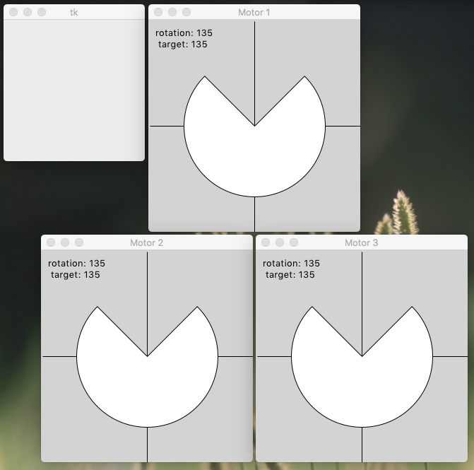

Self-contained GUI demo uses Tkinter to simulate a three-axis motion control system run by an AST interpreter. Run it at the command line without arguments to get a console prompt and some GUI windows. Here is what that looks like in a MacOS terminal window. Windows and Linux require minor adjustments to the syntax.
MarksiMac:toyMotor williamm$ pwd
/Users/williamm/Documents/Projects/asynTree/Python/toyMotor
MarksiMac:toyMotor williamm$ python3 toyMotor.py
@: r
@: q
15 (135, 135) 15 (135, 135) 15 (135, 135)
MarksiMac:toyMotor williamm$ python3 ../CompTree.py motorXRef.json motorX.json
[]
MarksiMac:toyMotor williamm$ python3 ../CompTree.py ctrlXRef.json ctrlX.json
[]
MarksiMac:toyMotor williamm$ python3 pseudoCode.py > pseudoCode.txt
MarksiMac:toyMotor williamm$ git diff pseudoCode.txtCheck that you have navigated to the right folder. Run the Python script toyMotor.py without arguments to obtain a console prompt and some GUI windows (screen capture below). Only two single-letter commands are accepted: ‘r’ to run and ‘q’ to quit. Type the ‘r’ run command and press [ENTER]. The demo should run for about a minute, going through its sequence several times. Type ‘q’ to quit the program. On exit the program writes two output files, motorX.json and ctrlX.json. These can be compared to checked-in reference files with an asymmetric JSON tree comparison using the Python script CompTree.py one level up. The empty square brackets show that no changes were found.
A better understanding of the AST interpreter’s command tree can be obtained by rendering its JSON representation in ctrlX.json as pseudocode using the Python script pseudoCode.py. Here I’ve redirected the output to a text file, and then used git to compare it with a checked-in version. No differences means test passed!

When individual motor windows are frontmost, they also respond to keypresses including arrow keys and some letter keys. This was left in for troubleshooting but is not part of the demo.